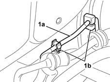
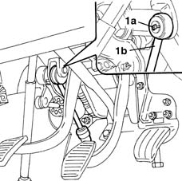
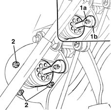
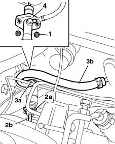

1280B21 (Pump) - MASTER CYLINER R.R. for right hand drive versions
- Path
- Procedures > 18 CLUTCH > 1820 CLUTCH RELEASE CONTROLS > 1820B HYDRAULIC CLUTCH SYSTEM > 1280B21 (Pump) - MASTER CYLINER R.R. for right hand drive versions
- Kind
- repair procedure (removal / refitting; the operation number is the code)
- Applies to
- all engines; all production periods
- Interactive page
- https://sloeber94.github.io/elrnDB-fMltpl/en/#/2891531
Applies to: engines: 1.9 JTD 8V; all production periods; only with equipment: Right hand drive
 Removing
Removing
 Refitting
RefittingApplies to: all engines; all production periods; only with equipment: Right hand drive
Disconnect the battery negative terminal.
Drain the brake/clutch fluid reservoir using a syringe.
Position a container underneath the vehicle.
Applies to: engines: 1.9 JTD 8V; all production periods; only with equipment: Right hand drive
1008C10 power unit upper reaction link r r
1008C16 body link bracket - r r
1044B10 fuel filter assembly - r + r or replace
1. Move the rigid diesel pipe (1a) away from the fastenings (1b) on the bodyshell.

Applies to: engines: 1.9 JTD 8V; all production periods; only with equipment: Right hand drive
3330C12 (PUMP) - MASTER CYLINDER R.R. for right hand drive versions
Applies to: all engines; all production periods; only with equipment: Right hand drive
1. Working from inside the vehicle, remove the safety clip (1a) and disconnect the clutch pump push rod (1b) from the pedal.

Applies to: engines: 1.9 JTD 8V; all production periods; only with equipment: Right hand drive
1. Working from inside the vehicle, remove the safety clip (1a) and separate the brake servo rod (1b) from the brake pedal idler.
2. Undo the fixing nuts and, working via the engine compartment, move the brake servo aside in order to reach the clutch pump fastenings.

Applies to: all engines; all production periods; only with equipment: Right hand drive
1. Undo the two nuts fixing the clutch pump to the bodyshell and partly extract the actual pump towards the engine compartment.
2. Remove the clip (1a) fastening the rigid pipe (1b) from the pump to the actuator cylinder to the pump and then detach the pipe.
3. Open the band (3a) and disconnect the flexible fluid supply pipe (3b) from the reservoir to the pump.
4. Remove the clutch pump.

Applies to: all engines; all production periods; only with equipment: Right hand drive
Refitting
RemovingConnect the pipes to the pump tightening the bands and fitting the retaining clip.
Position the clutch pump
Tighten the two nuts fixing the pump to the engine compartment bulkhead, then tighten them to the recommended torque.
 | Fastening | Component | Ø | Value (daNm) |
|---|---|---|---|---|
- | Nut | CLUTCH FLUID MASTER CYLINDER | M6 | 0.5 |
Applies to: engines: 1.9 JTD 8V; all production periods; only with equipment: Right hand drive
Place the brake servo in position
Tighten the nuts fixing the brake servo to the bodyshell to torque.
| Fastening | Component | Ø | Value (daNm) |
|---|---|---|---|---|
- | Nut | BRAKE SERVO | M8 | 2.2 |
Secure the rod for the brake servo to the pedal using the special clip.
3330C12 (PUMP) - MASTER CYLINDER R.R. for right hand drive versions
Applies to: all engines; all production periods; only with equipment: Right hand drive
Connect the clutch pump push rod to the pedal and fit the retaining clip.
Applies to: engines: 1.9 JTD 8V; all production periods; only with equipment: Right hand drive
Secure the rigid diesel pipe to the fastenings on the bodyshell.
1044B10 fuel filter assembly - r + r or replace
Applies to: all engines; all production periods; only with equipment: Right hand drive
1820B08 Clutch release HYDRAULIC SYSTEM - Bleeding air and restoring level
Applies to: engines: 1.9 JTD 8V; all production periods; only with equipment: Right hand drive
Applies to: all engines; all production periods; only with equipment: Right hand drive
Connect the battery negative terminal.
Topics linked from this page (7)
- 1008C10 power unit upper reaction link r r
- 1008C16 body link bracket - r r
- 1016A10 sound-proofing cover - r + r
- 1044B10 fuel filter assembly - r + r or replace
- 1820B08 Clutch release HYDRAULIC SYSTEM - Bleeding air and restoring level
- 3330A14 HYDRAULIC BRAKING SYSTEM - Bleed air
- 3330C12 (PUMP) - MASTER CYLINDER R.R. for right hand drive versions